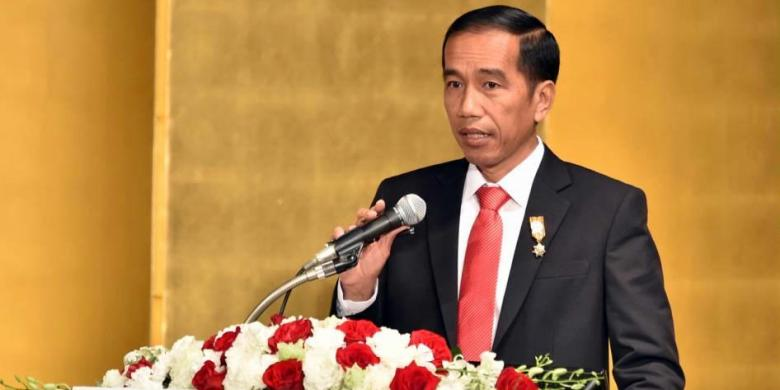
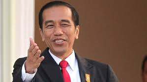

Prestasi Presiden Jokowi
Inilah 10 Prestasi Kepemimpinan Presiden Jokowi untuk memakmurkan rakyat dan kemajuan NKRI:
1. Membubarkan PETRAL yg bisa hemat anggaran sebesar Rp.250.miliar/hari
2. Mencabut subsidi BBM , sehingga dana nya dapat digunakan untuk berbagai hal yg produktif
3. Memulai pembuatan jalan toll Trans Sumatera tahap I dari Lampung-Palembang-Indralaya
4. Memulai dimulainya pemb.PLTU Batang, Jateng dgn Kapasitas 2.000.MW yg mangkrak selama 4th.
5. Dimulainya pengairan Waduk Jatigede, Sumedang yg berfungsi utk mengendalikan banjir di Indramayu, pengairan swh di Jabar serta pemb.PLTA dgn kapasitas 110 M
6. Pd Tanggal 09-09-15, dimulainya pemb.jalur LRT jurs Cibubur-Cawang & Bekasi Timur-Cawang (info: Kemen PUPR)
7. Pd Tanggal 21-09-15, peresmian dioperasikannya Bor Raksasa utk membuat terowongan dlm tanah guna jalur MRT trayek Lebak Bulus-KebayoranBaru-Senayan-Bund. H.I
8. Pemerintahan jokowi menggelontorkan dana sebesar Rp.16.t utk membgun infrast di perbatasan Kalimantan, Kalimantan Utara-Kalimantan Barat
9. Pemb Pelabuhan Laut dlm di Papua : Sorong, Manokwari, Jayapura & Merauke, serta infrast pembuatan jln yg menghbgkan kota di Papua.
10. Perush Saudi ARAMCO akan membangun Kilang Minyak serta Storage BBM di Indonesia senilai Rp.140.T yg slm ini pembangunan Kilang Minyak tdk pernah terwujud sejak era Soeharto
an di NTT dan seluruh pelabuhan di Maluku serta seluruh pelabuhan di Papua dan Papua Barat
Presiden Jokowi

"Saya tidak rela ada yang mencemooh prestasi saudara-saudara yang dikatakan kita sebagai tuan rumah diuntungkan," tegas Presiden saat menerima para atltet di Istana Negara
Kata Bijak Presiden Jokowi
Otak sebagai sumber pikiran harus slalu terkoneksi dengan hati, hati yang bersih dan pikiran yang jernih akan hasilkan ide-ide besar yang mampu mengubah kehidupan. [Jokowi]